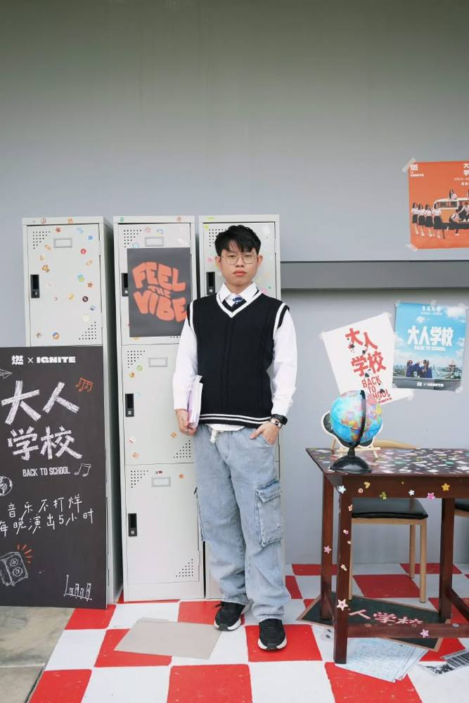

02 — LIVE PERFORMANCE
On stage.
SELECTED VENUE
STICK'N BITE
Resident Musician · Guitarist
PODIUM
KUCHING, SARAWAK.

A visual portfolio capturing live guitar performance, atmosphere and selected moments from the stage.
I'm a Resident Musician and Guitarist based in Kuching, Sarawak. I perform live at different venues and enjoy creating a good atmosphere through music. This portfolio is a collection of my performances, moments and experiences on stage.

For performances, collaborations and music-related enquiries.